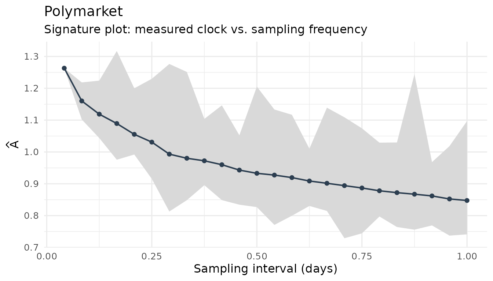
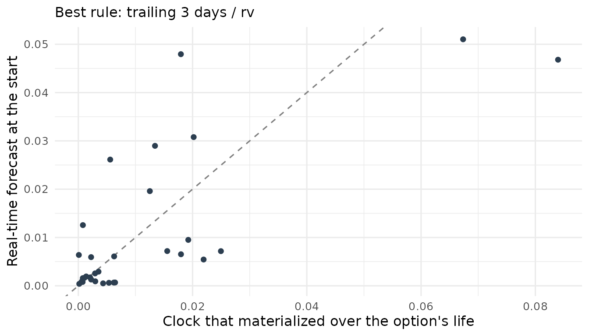
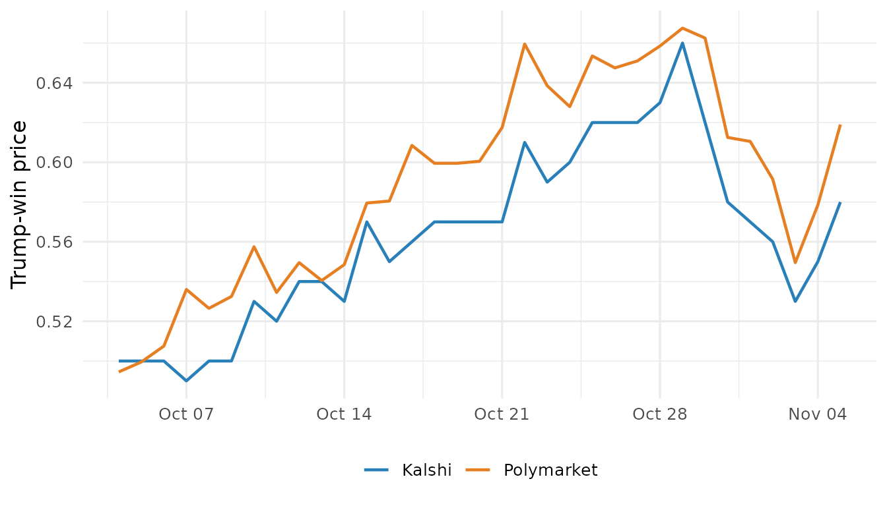
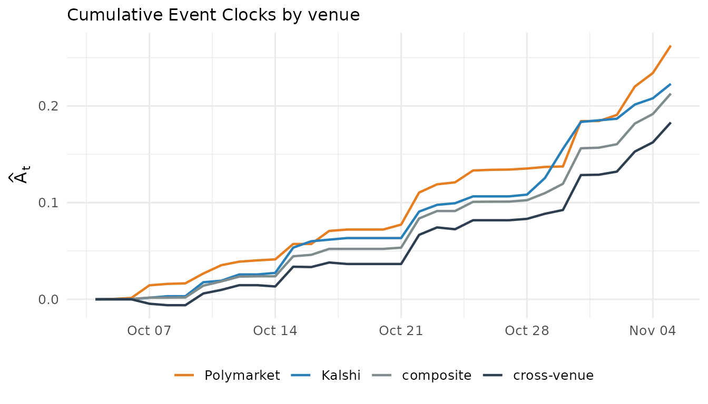

Measuring the Event Clock in practice: sampling, forecasts, and two venues
Source:vignettes/eventclock-measurement.Rmd
eventclock-measurement.RmdWhy measurement needs care
The Event Clock answers a simple question: how much news about a
scheduled event has arrived, and when? It is computed from the
price of a contract that pays out if the event happens — a
prediction-market price such as “Trump wins the 2024 election” — by
adding up the squared changes of its log odds, \(\log\{q/(1-q)\}\). Big, frequent revisions
mean lots of news; a flat price means none.
(vignette("eventclock-brexit") introduces the idea.)
In practice three things can distort that sum, and this vignette shows the package’s tools for each:
- How often you sample. Very fine sampling picks up trading noise (prices bouncing between bid and ask), not news.
- When you need the number. To price an option today you need the news still to come — a forecast — not the news that later turned out to arrive.
- Which market you read. Two venues trading the same event share the news but not their trading noise; comparing them separates the two.
All examples use data that ship with the package: hourly Polymarket prices for the 2024 U.S. presidential election and a daily Kalshi series for the same event. Times below are written in New York time, the time zone of the U.S. option market.
data(polymarket2024)
data(kalshi2024)
ep24 <- as_event_prices(polymarket2024, market_id = "Polymarket")
ny <- function(x) as.POSIXct(x, tz = "America/New_York")1. Sampling frequency
Sample too often and the clock counts noise; sample too rarely and it
throws information away. Two tools make the trade-off visible. The
signature plot shows the measured clock when you keep every
observation, every second, every third, and so on
(max_every = 24: up to every 24th hourly price,
i.e. daily). If the clock falls steeply as sampling gets coarser, the
fine-grained version is inflated by noise:
plot_signature(ec_signature(ep24, max_every = 24))
Over the full five months, the clock measured from every hourly price is about half again as large as the one from every 24th price, and it falls steadily as the spacing grows: coarser grids average out short-lived noise (and miss some intraday news).
event_clock_staggered() then measures the clock at a
chosen interval while still using all the data: it samples every
interval minutes, repeats this for every possible starting
point of the sampling grid, and averages. The estimator — the plain sum
(rv), the version that drops each grid’s largest move
(largest1), or bipower, which an isolated jump
barely affects — is applied within each grid. For the final month of the
campaign:
oct4 <- ny("2024-10-04 15:45")
nov5 <- ny("2024-11-05 15:45")
stag <- do.call(rbind, lapply(c(60, 120, 240, 1440), function(iv) {
event_clock_staggered(ep24, from = oct4, to = nov5, interval = iv,
methods = c("rv", "largest1", "bipower"))
}))
knitr::kable(
stats::reshape(as.data.frame(stag[, c("interval_min", "method", "A")]),
idvar = "interval_min", timevar = "method",
direction = "wide"),
digits = 3, col.names = c("Interval (min)", "RV", "Largest-1", "Bipower"),
row.names = FALSE
)| Interval (min) | RV | Largest-1 | Bipower |
|---|---|---|---|
| 60 | 0.409 | 0.389 | 0.362 |
| 120 | 0.348 | 0.327 | 0.319 |
| 240 | 0.314 | 0.285 | 0.302 |
| 1440 | 0.229 | 0.189 | 0.216 |
In the final month the clock roughly halves between hourly and daily sampling. Part of that is genuine intraday news that a daily snapshot misses, part is noise — so report several constructions side by side rather than picking one. Dropping the largest move shows how much a single news burst contributes.
2. Forecasting the clock in real time
An option that expires before the election is exposed to the news
that will arrive while it is alive. On the day you price it,
that news has not happened yet, so you need a forecast.
event_clock_forecast() measures how fast the clock has been
ticking recently (clock time per day) and multiplies by the remaining
time — using only prices observed up to the valuation time. The
horizon can be a number of days or an end time:
at <- ny("2024-10-25 15:45") # Friday, end-of-day option snapshot
expiry <- ny("2024-11-01 15:45") # the following Friday's expiry
fc <- event_clock_forecast(ep24, at = at, horizon = expiry, days = 3)
fc[, c("rule", "rate_per_day", "A_forecast")]
#> # A tibble: 1 × 3
#> rule rate_per_day A_forecast
#> <chr> <dbl> <dbl>
#> 1 trailing 3 days / rv 0.0225 0.157The recent window can be set in three ways: days = a
number of calendar days before the valuation time (here 3),
trailing = a number of observations, or
expanding = TRUE for the whole history so far.
How far back should “recently” reach — three days, two weeks, the
whole history? Do not guess, and above all do not choose the window that
makes your test results look best. Instead, let earlier option lives
decide: for every past option, forecast its clock from what was known
when it started, compare with the clock that actually materialized, and
keep the rule with the smallest root-mean-square forecast error.
ec_forecast_select() does exactly that. Here the earlier
lives are weekly options valued Monday to Thursday at 15:45 and expiring
on Friday, for every week whose expiry is no later than October 25:
fridays <- seq(as.Date("2024-09-06"), as.Date("2024-10-25"), by = "week")
lives <- do.call(rbind, lapply(fridays, function(f) {
data.frame(start = ny(paste(f - (4:1), "15:45")),
end = ny(paste(f, "15:45")))
}))
sel <- ec_forecast_select(ep24, lives,
rules = ec_forecast_rules(days = c(3, 5, 7, 10, 14, 20), expanding = TRUE))
sel
#> -- Real-time clock forecast selection (32 option lives scored)
#> Best rule: trailing 3 days / rv (RMSE 0.01194)
#> # A tibble: 7 × 5
#> rule n rmse mae bias
#> <chr> <int> <dbl> <dbl> <dbl>
#> 1 trailing 3 days / rv 32 0.0119 0.00781 -0.00105
#> 2 trailing 5 days / rv 32 0.0120 0.00708 -0.00291
#> 3 trailing 7 days / rv 32 0.0126 0.00732 -0.00350
#> 4 trailing 10 days / rv 32 0.0139 0.00727 -0.00427
#> 5 trailing 14 days / rv 32 0.0147 0.00756 -0.00482
#> 6 trailing 20 days / rv 32 0.0152 0.00782 -0.00532
#> 7 expanding / rv 32 0.0189 0.0138 0.00678By RMSE the three-day window wins, narrowly ahead of five days; all short windows beat the long and expanding ones. Recent activity predicts near-term news better than the long-run average, because campaign news comes in waves. (The working paper makes the same choice on its own set of option lives.)
best <- sel$detail[sel$detail$rule == sel$best$rule, ]
ggplot(best, aes(realized, forecast)) +
geom_abline(linetype = 2, color = "grey50") +
geom_point(color = "#2c3e50") +
labs(x = "Clock that materialized over the option's life",
y = "Real-time forecast at the start",
subtitle = paste("Best rule:", sel$best$rule)) +
theme_minimal(base_size = 12)
Forecasts are noisy: points scatter widely around the dashed line of perfect forecasts. The forecast made on October 25 (0.157) turned out to be 2.3 times the news that actually arrived the following week:
event_clock(ep24, from = at, to = expiry, methods = "rv")$A
#> [1] 0.0680259The selection also depends on which earlier lives you score — choose lives that look like the options you study (same length, same time of day).
A conservative check. The clock measures news only
if the market does not also keep re-weighing how much it values the two
outcomes. If at most a fraction \(\delta^2\) of the measured clock came from
such re-valuation, the true news clock lies between \((1-\delta)^2\) and \((1+\delta)^2\) times the measured one;
\(\delta = 0.5\) gives a range from a
quarter to 2.25 times. The working paper’s most conservative check uses
that lower end. ec_recovery_set() tabulates the range:
ec_recovery_set(fc$A_forecast, delta = c(0, 0.25, 0.5))
#> # A tibble: 3 × 4
#> A delta lower upper
#> <dbl> <dbl> <dbl> <dbl>
#> 1 0.157 0 0.157 0.157
#> 2 0.157 0.25 0.0884 0.246
#> 3 0.157 0.5 0.0393 0.3543. Two venues for one event
Kalshi listed its own contract on the 2024 election on October 4.
Taking both venues’ prices at the same moment each day gives two
synchronized series. pm_daily() keeps the last price at or
before a given hour of each day and works for any intraday series, not
only Polymarket; snapshot_hour = 15.75 means 15:45 New York
time (15.75 in decimal hours), which matches end-of-day option quotes.
The shipped kalshi2024 series is already such a 15:45
snapshot:
pm <- pm_daily(ep24, snapshot_hour = 15.75)
ks <- as_event_prices(kalshi2024, time = "date", price = "q",
market_id = "Kalshi")
both <- rbind(
data.frame(date = pm$time, q = pm$q, venue = "Polymarket"),
data.frame(date = ks$time, q = ks$q, venue = "Kalshi")
)
ggplot(subset(both, date >= as.Date("2024-10-04")),
aes(date, q, color = venue)) +
geom_line(linewidth = 0.8) +
scale_color_manual(values = c(Kalshi = "#2980b9", Polymarket = "#e67e22"),
name = NULL) +
labs(x = NULL, y = "Trump-win price") +
theme_minimal(base_size = 12) +
theme(legend.position = "bottom")
The levels differ persistently — Kalshi traded a few points lower —
but the clock does not care about a constant gap in levels; it measures
the changes. event_clock_venues() compares four
clocks:
-
A_x,A_y— each venue’s own clock; -
A_composite— the clock of the average of the two venues’ log odds; -
A_cross— a cross-venue clock that multiplies one venue’s daily move by the other’s.
The idea behind the last one: suppose each venue’s log odds are the
common news plus its own independent trading noise. News moves both
venues in the same direction, so it survives the product; one venue’s
noise is unrelated to the other’s, so on average it cancels. Then
1 - A_cross / A_x is the share of venue x’s clock that is
its own noise. In short samples with little common news
A_cross can even turn negative — treat it as a diagnostic,
not an exact measurement.
v <- event_clock_venues(pm, ks, from = as.Date("2024-10-04"),
labels = c("Polymarket", "Kalshi"))
v[, c("A_x", "A_y", "A_composite", "A_cross", "corr",
"noise_share_x", "noise_share_y")]
#> # A tibble: 1 × 7
#> A_x A_y A_composite A_cross corr noise_share_x noise_share_y
#> <dbl> <dbl> <dbl> <dbl> <dbl> <dbl> <dbl>
#> 1 0.262 0.223 0.213 0.183 0.752 0.303 0.179The two venues’ daily moves are strongly correlated (0.75), and the cross-venue clock is smaller than either venue’s own: under the noise model above, about 30% of Polymarket’s and 18% of Kalshi’s daily clock is venue-specific. (Polymarket’s own daily clock here, 0.262, differs slightly from the daily row of the table in section 1 because it uses one sampling grid — the 15:45 snapshot — instead of the average over all daily grids.) The cumulative version shows where the venues agree and where they part ways:
plot(event_clock_venues_path(pm, ks, from = as.Date("2024-10-04"),
labels = c("Polymarket", "Kalshi")))
One caveat: a second venue sharpens the timing of news and filters noise, but it cannot by itself say how large the true clock is in absolute terms — both venues could misstate it in the same way. That is why the recovery range above stays part of the analysis.
Getting the data yourself
Both venues are reachable through public, keyless APIs:
# Polymarket: find the event, pick the "Yes" token, pull hourly prices
mkts <- pm_markets("presidential-election-winner-2024")
tok <- mkts$token_id[grepl("Trump", mkts$question) & mkts$outcome == "Yes"]
pm_raw <- pm_prices(tok, from = "2024-06-01", to = "2024-11-06")
# Kalshi: list the event's markets, pull hourly candles
ks_markets("PRES-2024")
ks_raw <- ks_prices("PRES-2024-DJT", from = "2024-10-04", to = "2024-11-06")
# synchronize both at 15:45 New York time
event_clock_venues(pm_daily(pm_raw, snapshot_hour = 15.75),
pm_daily(ks_raw, snapshot_hour = 15.75))A measurement checklist
- Look at the signature plot before trusting an intraday clock; report more than one sampling interval.
- For anything priced before the news arrives, use a real-time forecast and choose its rule on earlier periods only.
- Report the conservative end of
ec_recovery_set()alongside the baseline. - When a second venue exists, check the cross-venue clock: it shows how much of each venue’s clock is its own noise.
Where next
-
vignette("eventclock-validation")— the estimator on simulated data with a known true clock, including noise and jumps; -
vignette("eventclock-event-betas")— which assets move with the event probability; -
vignette("eventclock-event-spanning")— the exposure from options, and pricing options that expire before the event with a forecast clock.
The methods follow the accompanying working papers: Hanke, Schadner, Stöckl, and Weissensteiner, Learning Before Scheduled Events: Prediction Markets, State Prices, and Option Valuation, and The Event Clock: What State Prices Identify About Physical Information (both Working Papers).